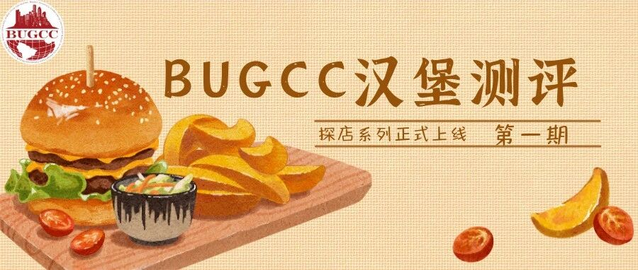
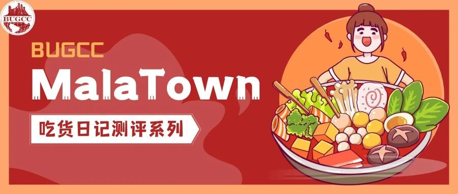
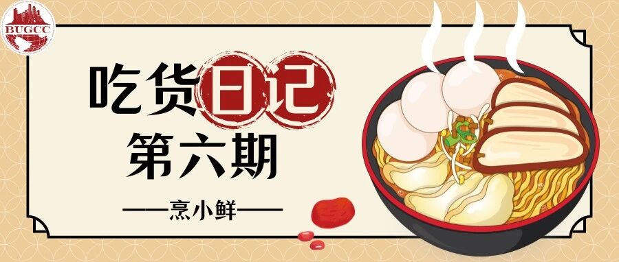

ABOUT · 关于这个栏目
远在波士顿，胃比心更先想家。
《BU吃货日记》是 BUGCC 出品的波士顿美食测评栏目——我们替你跑遍 Allston、Chinatown、Comm Ave 沿线的餐厅，从一碗拉面、一份烧腊、一锅麻辣到一笼面食，给出真实的口味评分、出餐速度、人均价格和适配场景。
不是探店打卡，是给 BU 学生的一份实用觅食地图。
EPISODES · 已发布期数
点击封面阅读完整推文

微信推文 ↗
微信推文 ↗
微信推文 ↗

微信推文 ↗
微信推文 ↗

微信推文 ↗下一期酝酿中。关注 BUGCC 公众号，更新第一时间送达。